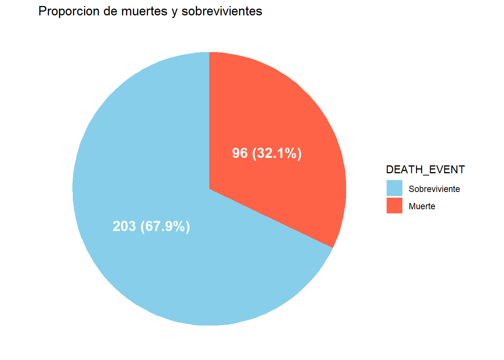
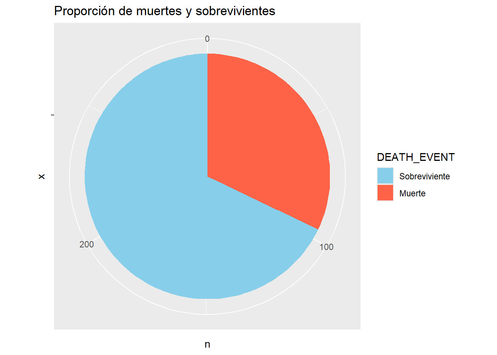

Capítulo 3 Análisis exploratorio de datos (EDA)
3.1 Contexto de los datos
Aquí se presenta una explicación de las variables pertenecientes al conjunto de datos:
age (años): Edad del paciente.
anaemia (lógica): Disminución de glóbulos rojos o hemoglobina.
creatinine_phosphokinase (µg/L): Nivel de la enzima CPK en la sangre.
diabetes (lógica): Alteración del uso de la glucosa en la sangre.
ejection_fraction (porcentaje): Porcentaje de sangre bombeada.
high_blood_pressure (lógica): Presión arterial elevada de forma persistente.
platelets: Plaquetas en sangre.
serum_creatinine (mg/dL): Nivel de creatinina en sangre.
serum_sodium (mEq/L): Nivel de sodio en sangre.
sex (Binario): Mujer u hombre.
smoking (lógica): Pacientes fumadores.
time (días): Periodo de seguimiento.
DEATH_EVENT (lógica): Pacientes muertos o vivos (
Target).
3.2 Extracción, transformación y carga (ETL)
- Cargamos las librerías:
## ── Attaching core tidyverse packages ──────────────────────── tidyverse 2.0.0 ──
## ✔ dplyr 1.1.4 ✔ purrr 1.1.0
## ✔ forcats 1.0.0 ✔ stringr 1.5.1
## ✔ ggplot2 3.5.2 ✔ tibble 3.3.0
## ✔ lubridate 1.9.4 ✔ tidyr 1.3.1
## ── Conflicts ────────────────────────────────────────── tidyverse_conflicts() ──
## ✖ dplyr::filter() masks stats::filter()
## ✖ dplyr::lag() masks stats::lag()
## ℹ Use the conflicted package (<http://conflicted.r-lib.org/>) to force all conflicts to become errors## Cargando paquete requerido: Rcpp
## ##
## ## Amelia II: Multiple Imputation
## ## (Version 1.8.3, built: 2024-11-07)
## ## Copyright (C) 2005-2025 James Honaker, Gary King and Matthew Blackwell
## ## Refer to http://gking.harvard.edu/amelia/ for more information
## ##- Cargamos el conjunto de datos:
## Rows: 299 Columns: 13
## ── Column specification ────────────────────────────────────────────────────────
## Delimiter: ","
## dbl (13): age, anaemia, creatinine_phosphokinase, diabetes, ejection_fractio...
##
## ℹ Use `spec()` to retrieve the full column specification for this data.
## ℹ Specify the column types or set `show_col_types = FALSE` to quiet this message.- Verificamos el encabezado de los datos, sus dimensiones, nombres de columnas y estructura del dataset:
## # A tibble: 5 × 13
## age anaemia creatinine_phosphokinase diabetes ejection_fraction
## <dbl> <dbl> <dbl> <dbl> <dbl>
## 1 75 0 582 0 20
## 2 55 0 7861 0 38
## 3 65 0 146 0 20
## 4 50 1 111 0 20
## 5 65 1 160 1 20
## # ℹ 8 more variables: high_blood_pressure <dbl>, platelets <dbl>,
## # serum_creatinine <dbl>, serum_sodium <dbl>, sex <dbl>, smoking <dbl>,
## # time <dbl>, DEATH_EVENT <dbl>## [1] 299 13## [1] "age" "anaemia"
## [3] "creatinine_phosphokinase" "diabetes"
## [5] "ejection_fraction" "high_blood_pressure"
## [7] "platelets" "serum_creatinine"
## [9] "serum_sodium" "sex"
## [11] "smoking" "time"
## [13] "DEATH_EVENT"## spc_tbl_ [299 × 13] (S3: spec_tbl_df/tbl_df/tbl/data.frame)
## $ age : num [1:299] 75 55 65 50 65 90 75 60 65 80 ...
## $ anaemia : num [1:299] 0 0 0 1 1 1 1 1 0 1 ...
## $ creatinine_phosphokinase: num [1:299] 582 7861 146 111 160 ...
## $ diabetes : num [1:299] 0 0 0 0 1 0 0 1 0 0 ...
## $ ejection_fraction : num [1:299] 20 38 20 20 20 40 15 60 65 35 ...
## $ high_blood_pressure : num [1:299] 1 0 0 0 0 1 0 0 0 1 ...
## $ platelets : num [1:299] 265000 263358 162000 210000 327000 ...
## $ serum_creatinine : num [1:299] 1.9 1.1 1.3 1.9 2.7 2.1 1.2 1.1 1.5 9.4 ...
## $ serum_sodium : num [1:299] 130 136 129 137 116 132 137 131 138 133 ...
## $ sex : num [1:299] 1 1 1 1 0 1 1 1 0 1 ...
## $ smoking : num [1:299] 0 0 1 0 0 1 0 1 0 1 ...
## $ time : num [1:299] 4 6 7 7 8 8 10 10 10 10 ...
## $ DEATH_EVENT : num [1:299] 1 1 1 1 1 1 1 1 1 1 ...
## - attr(*, "spec")=
## .. cols(
## .. age = col_double(),
## .. anaemia = col_double(),
## .. creatinine_phosphokinase = col_double(),
## .. diabetes = col_double(),
## .. ejection_fraction = col_double(),
## .. high_blood_pressure = col_double(),
## .. platelets = col_double(),
## .. serum_creatinine = col_double(),
## .. serum_sodium = col_double(),
## .. sex = col_double(),
## .. smoking = col_double(),
## .. time = col_double(),
## .. DEATH_EVENT = col_double()
## .. )
## - attr(*, "problems")=<externalptr>- Identificamos los valores
NA:
## Warning: Unknown or uninitialised column: `arguments`.
## Unknown or uninitialised column: `arguments`.## Warning: Unknown or uninitialised column: `imputations`.
Como se observa en el gráfico no se presentan datos faltantes en el dataset.
3.3 Ánálisis de la variable objetivo: DEATH_EVENT
- Resumen de la variable:
## # A tibble: 2 × 3
## DEATH_EVENT n proporcion
## <dbl> <int> <dbl>
## 1 0 203 0.679
## 2 1 96 0.321datos %>%
summarise(
total_registros = n(),
total_muertes = sum(DEATH_EVENT == 1),
total_sobrevivientes = sum(DEATH_EVENT == 0),
prop_muertes = mean(DEATH_EVENT),
prop_sobrevivientes = 1 - mean(DEATH_EVENT))## # A tibble: 1 × 5
## total_registros total_muertes total_sobrevivientes prop_muertes
## <int> <int> <int> <dbl>
## 1 299 96 203 0.321
## # ℹ 1 more variable: prop_sobrevivientes <dbl>La variable DEATH_EVENT representa la mortalidad de los pacientes, indicando si el paciente murió (1) o no (0). De un total de 299 observaciones, el 67,89% de los pacientes sobrevivieron (\(n = 203\)), mientras que el 32,1% murieron (\(n = 96\)). Esta distribución de los datos está moderadamente desbalanceada, lo que sugiere que hay más casos de no fallecimiento que de fallecimiento, pero no es un desequilibrio extremo. Sin embargo, a nivel clínico la proporción del 32% de defunciones es alta en comparación con la población general, lo que podría deberse a que los datos provienen de una población de alto riesgo.
- Diagrama de barras
tabla_smoking <- datos %>%
count(smoking, name = "Pacientes") %>%
mutate(
Porcentaje = round(Pacientes / sum(Pacientes) * 100, 1),
Etiqueta = paste0(Pacientes, " (", Porcentaje, "%)"))
tabla_smoking %>%
ggplot(aes(x = factor(smoking), y = Pacientes)) +
geom_col(fill = "#008B8B", width = 0.6) +
geom_text(aes(label = Etiqueta), vjust = -0.5, size = 3) +
facet_grid(~ "Diagrama de barras de pacientes") +
scale_y_continuous(expand = expansion(mult = c(0, 0.15))) +
labs(x = "Pacientes", y = "Numero de pacientes (Porcentaje)")
- Gráficos
datos %>%
count(DEATH_EVENT) %>%
ggplot(aes(x = "", y = n, fill = factor(DEATH_EVENT))) +
geom_col() +
coord_polar(theta = "y") +
labs(fill = "DEATH_EVENT", title = "Proporcion de muertes y sobrevivientes") +
scale_fill_manual(values = c("skyblue", "tomato"),
labels = c("0" = "Sobreviviente", "1" = "Muerte"))
ggplot(datos, aes(x = factor(DEATH_EVENT), y = age)) +
geom_boxplot(fill = "orange", alpha = 0.7) +
labs(
x = "Muerte (1 = si, 0 = no)",
y = "Edad",
title = "Distribucion de edad segun muerte")